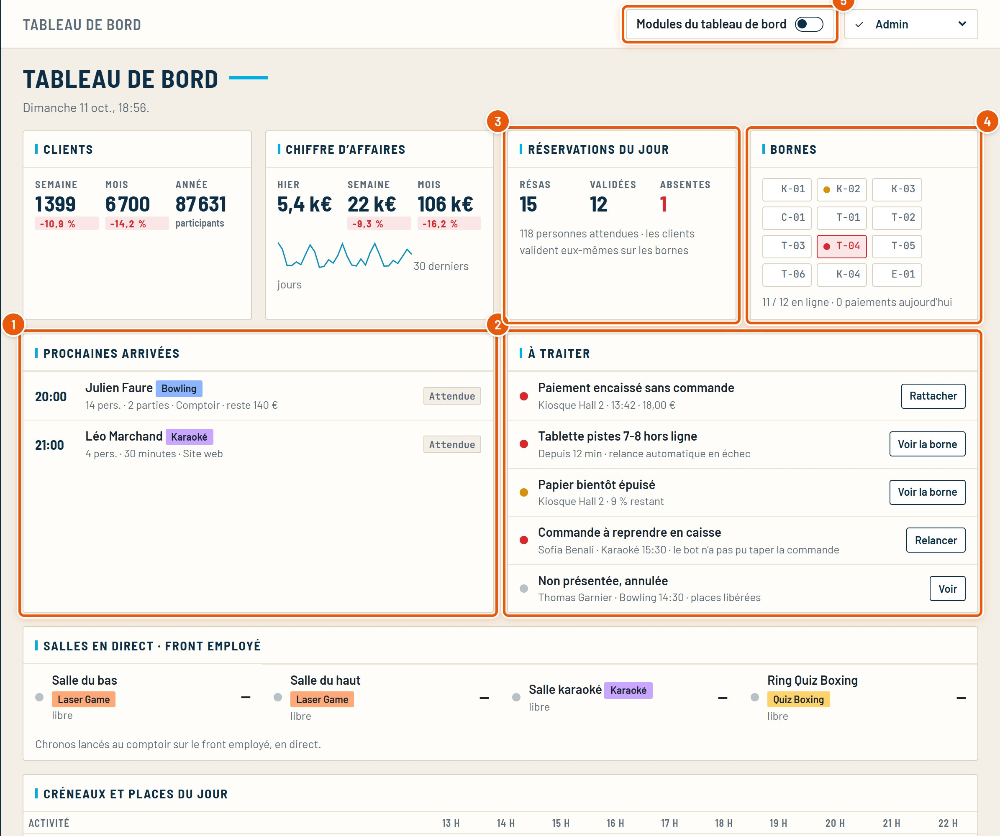
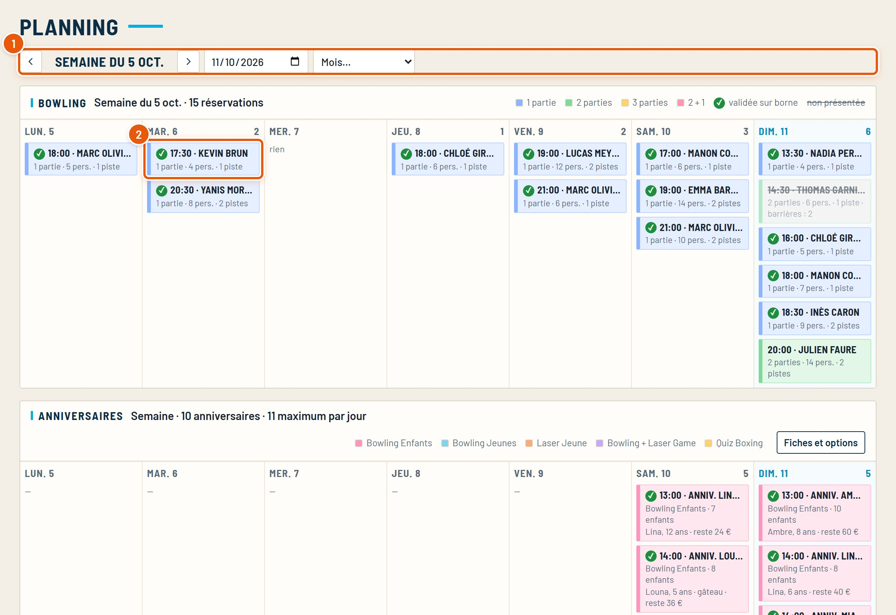
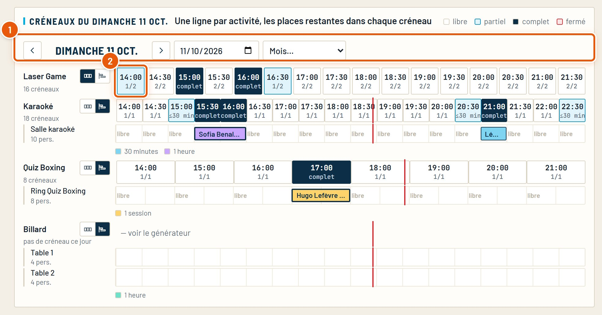
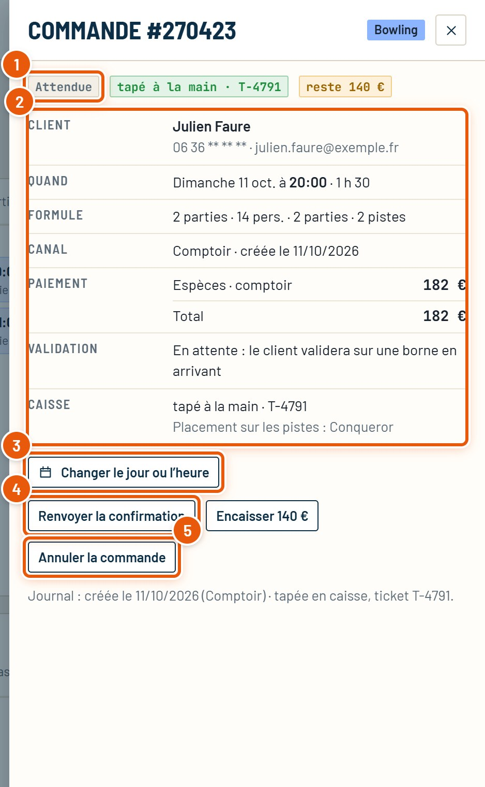
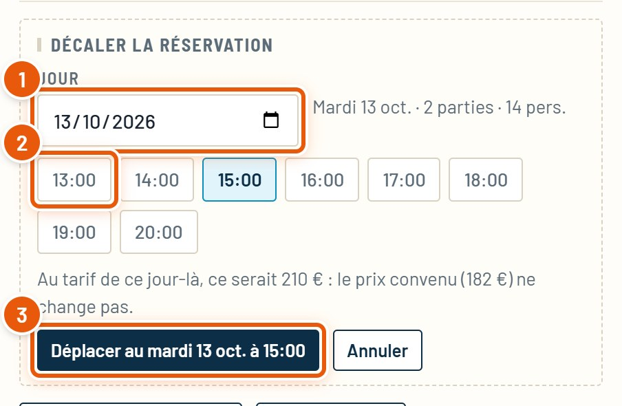
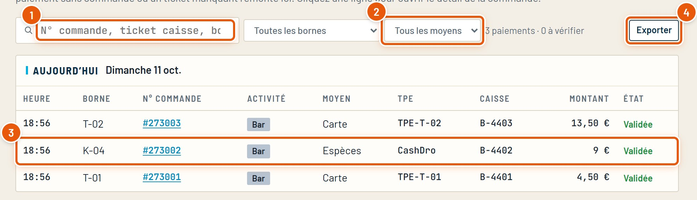

Guide détaillé
Le quotidien à l’accueil
Le tableau de bord, le planning, la fiche d’une réservation (décaler, annuler, encaisser), les transactions, et que faire dans les situations courantes au comptoir.
Octobre 2026SpaceBowling Engine
Guide détaillé
Le tableau de bord, le planning, la fiche d’une réservation (décaler, annuler, encaisser), les transactions, et que faire dans les situations courantes au comptoir.
Ce guide est pour l’équipe d’accueil : ce qu’on regarde en arrivant, comment retrouver une réservation et la modifier, et que faire quand un client a un souci.
Ce qu’il faut regarder est entouré en orange et numéroté. Tout ce que montre le CRM est en direct : une réservation faite sur le site ou une borne apparaît aussitôt.
La première page du CRM. D’un coup d’œil : qui arrive, ce qui est à traiter, l’état des bornes et les places du jour.

Plus bas : les salles en direct (chronos lancés au comptoir) et les créneaux et places du jour, activité par activité et heure par heure (places restantes sur places totales).
Menu Exploiter › Planning. La semaine du bowling et des anniversaires, puis les créneaux du jour de chaque activité.


Les deux petits boutons à gauche de chaque activité changent l’affichage : en créneaux, ou en frise par salle (une ligne par salle, les réservations à leur vraie durée). Le choix est retenu pour cette activité.
Un clic sur une réservation, n’importe où dans le CRM, ouvre sa fiche « Commande # » à droite.

Un client veut venir un autre jour, ou plus tard : on déplace sa réservation sans rien refaire.

Le prix convenu et ce qui est déjà payé ne changent pas, même si le tarif du nouveau jour est différent (la fiche l’indique). Le site, les bornes et le comptoir suivent aussitôt. Pensez à prévenir le client : son téléphone et son e-mail sont dans la fiche.
Menu Exploiter › Transactions. Chaque paiement passé sur une borne, une tablette, un téléphone ou au comptoir.

Un paiement à vérifier (encaissé sans commande, ticket de caisse manquant) remonte en haut, et dans « À traiter » du tableau de bord.
Où aller, en un coup d’œil. Le détail est dans le guide indiqué.
| Le client… | Ce qu’on fait | Guide |
|---|---|---|
| veut changer de jour ou d’heure | Fiche de la réservation › Changer le jour ou l’heure. | Ce guide, chapitre 4 |
| veut annuler | Fiche de la réservation › Annuler la commande. (Sur le site, le bouton « Annuler » envoie un e-mail au centre.) | Ce guide, chapitre 3 |
| a payé une partie au bar et est parti | Bar › Commandes › À traiter : encaisser le reste ou classer abandonnée. | Le bar |
| a choisi « espèces » sur une tablette de piste | Il paie sur une grande borne avec son numéro (« Finaliser ma commande »), dans les 10 minutes. | Les bornes |
| a réservé un bowling en ligne | Il finalise sur une borne avec son numéro : prénoms, barrières et acompte sont repris. | Les bornes |
| a oublié son mot de passe du site | Centre › Clients › sa fiche : donnez-lui un nouveau mot de passe. | Le site et les clients |
| ne trouve plus d’heure en ligne | Vérifier les créneaux de l’activité (alerte « À régler »), ou réserver au comptoir. | Prix et horaires |
| signale une salle en panne | Fiche de l’activité › Créneaux : un clic sur la case ferme la salle à cette heure. | Prix et horaires |
En bas à droite du CRM, des notifications annoncent en direct ce qui se passe : réservation sur le site, commande bar, paiement refusé, créneau fermé… Elles disparaissent seules.
Les cas les plus courants, et où regarder.
| Ce que vous voyez | À vérifier |
|---|---|
| Une réservation n’apparaît pas | Le bon jour dans le planning (flèches, date). Une réservation annulée (non présentée) a ses places libérées. |
| « Absente » sur une réservation | Le client n’a pas validé à l’heure sur une borne : la réservation est annulée et les places libérées. |
| « Commande à reprendre en caisse » | Le bot n’a pas pu taper la partie : « Relancer » dans À traiter. |
| Une borne en rouge sur le tableau de bord | Gestion des bornes › sa carte (hors ligne, papier). |
| Pas le droit d’ouvrir un écran | Votre rôle (Administratif › Comptes et accès) : demandez à un responsable. |
Tous les guides du CRM, refaits à partir du vrai logiciel. Ils se trouvent dans le dossier docs.